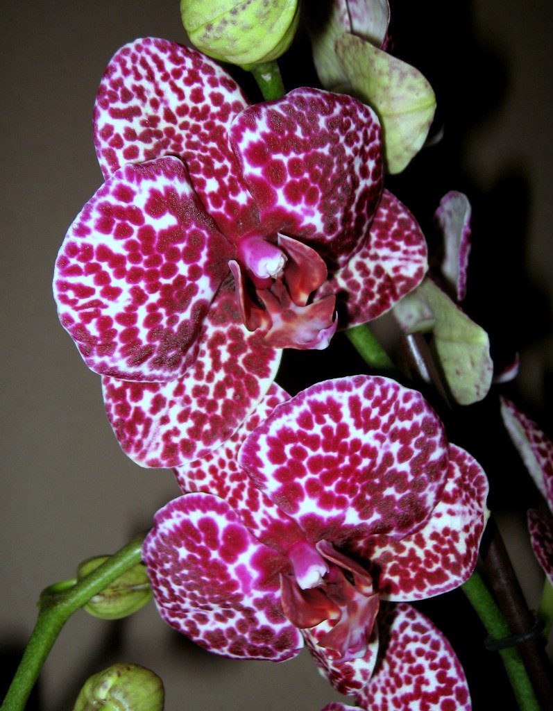
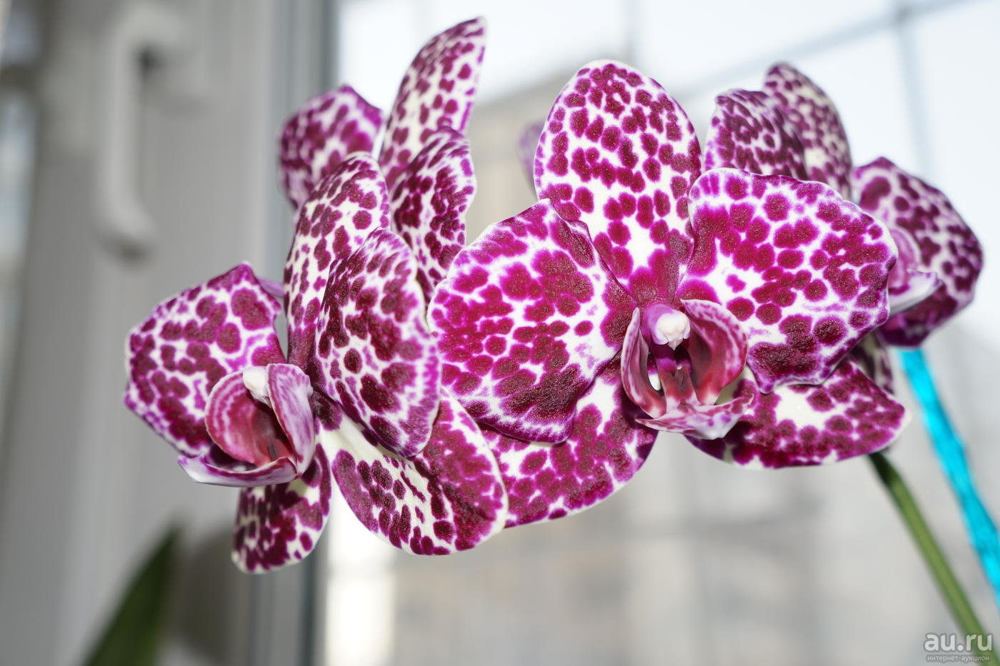
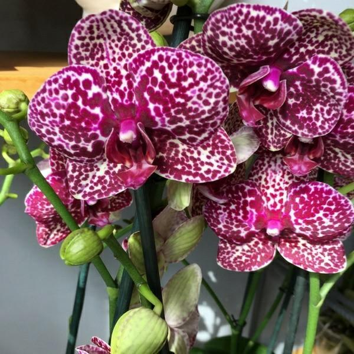

Phal. Lioulin Wild Cat
«Дикий кіт» - один з рідкісних фаленопсисів, що зустрічаються в домашньому квітникарстві. Батьківщиною його предків вважаються Філіппіни і Австралія. Родовід налічує близько 20 видів, засновниками якого були Phalaenopsis «Ho's Fantastic Mirage Tin-Fan Ho» - насіннєвий батько і батько пилку Phalaenopsis «Jiuhbao Red Rose Jiuh Bao Biotech». Володіючи прекрасними генами цінується за благородного вигляду, норовливість і граціозність.
Квітконоси, кількість яких може бути в межах між 1-4, при домашньому вирощуванні зазвичай становить 2-4. Має середню довжину в дорослому стані близько 60-80 см. Досить часто добре розгалужені з великою кількістю квіток.
Доросла рослина має зазвичай від 4 до 8 листків. Листки гладенькі, м'ясисті з товщиною близько 2 мм. Форма листа подовжено - овальна, з розміром в довжину від 10 до 35 см і шириною 8-10 см.
Форма квітки стандартна для фаленопсиса, що складається з трьох пелюсток і трьох чашолистків. Сепаліі (чашолистки) утворюють зовнішнє коло, а петаліте (пелюстки), разом з губою утворюють внутрішнє коло. Губа має відмінність по фарбуванню - темно - фіолетового, майже бордово - фіолетового кольору. Квітка нагадує метелика. Діаметр його залежить від віку рослини і умов вирощування. У «Wild Cat» він може бути від 6 до 9 см.


